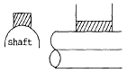
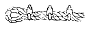
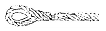
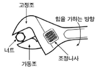

천장크레인운전기능사 (2009-01-18 기출문제)
1과목: 임의 구분
1. 15Kw의 전동기로 12m/min의 속도로 권상할 경우 권상하중은? (단, 전동기를 포함한 크레인의 효율은 65%이다.)
- 5ton
- 10ton
- 15ton
- 20ton
(정답률: 40%)

2. 시브 및 와이어 드럼 홈의 지름은 와이어로프 공칭지름보다 얼마나 크게 하는 것이 가장 적당한가?
- 10%
- 20%
- 25%
- 30%
(정답률: 58%)
3. 권상장치의 제동용 전자브레이크 제동력은 권상전동기 정격토크의 몇 %이상이어야 하는가?
- 100%
- 150%
- 300%
- 500%
(정답률: 67%)
4. 훅(hook)에 대하여 설명한 것으로 맞는 것은?
- 훅 본체는 균열 또는 변형이 없어야 한다.
- 훅의 재질은 탄소강 단강품이나 기계구조용 탄소강이며 강도와 연성이 작은 것이 바람직하다.
- 훅의 마모는 와이어로프가 걸리는 부분에 홈이 생기며 이 홈의 깊이가 10㎜가 되면 평편하게 다듬질 하여야 한다.
- 훅 입구의 벌어짐이 50% 이상 되면 교환하여야 한다.
(정답률: 62%)
5. 권과 방지용 리미트 스위치의 종류가 아닌 것은?
- 나사형
- 캠형
- 중추식
- 앵커형
(정답률: 81%)
6. 다음 설명 중 맞지 않는 것은?
- 크래브는 권상장치와 횡행장치로 구성되어 있으며 와이어로프를 통하여 훅을 가지고 있다.
- 권상장치는 물건을 수직으로 들어 올리거나 내리는 역할을 하며, 주요 부품은 모터, 브레이크, 감속기, 드럼 등을 가지고 있다.
- 횡행장치는 크래브를 이동시키는 역할을 하며, 모터, 브레이크, 감속기를 통하여 차륜을 구동한다.
- 주행장치는 횡행장치와 비슷한 구조로 되어 있으며 항상 횡행장치와 동시에 움직인다.
(정답률: 91%)
7. 과부하 방지장치의 구비조건이 아닌 것은?
- 성능검정 합격품일 것
- 정격하중의 1.1배 권상시 경보와 함께 권상, 횡행, 주행동작이 불가능 한 구조일 것
- 과부하시 운전자가 용이하게 조정할 수 있는 곳에 설치할 것
- 임의로 조정할 수 없도록 봉인되어 있을 것
(정답률: 48%)
8. AC브레이크 라이닝의 마모한도는 원치수 두께의 몇 %가 되면 교체해야 하는가?
- 20%
- 40%
- 50%
- 70%
(정답률: 84%)
9. 주행 차륜 플랜지는 두께의 몇% 마모와 수직에서 몇 도의 변형이 생기면 교환하는 것이 좋은가?
- 40%, 20도
- 40%, 10도
- 50%, 10도
- 50%, 20도
(정답률: 48%)
10. "60 / 20 x 42m"이 가리키는 의미는?
- 주권이 20 ton, 보권이 60ton, 스팬이 42m
- 주권이 60 ton, 보권이 20ton, 스팬이 42m
- 주권이 60 ton, 보권이 20ton, 양정이 42m
- 주권이 20 ton, 보권이 60ton, 양정이 42m
(정답률: 72%)
11. 20~50ton의 용량을 가진 천장크레인에 일반적으로 많이 쓰이고 있는 거더(girder)는?
- I형 거더
- 박스(Box) 거더
- 판(Flat) 거더
- 트러스(Truss) 거더
(정답률: 85%)
12. 다음은 횡행장치를 설명한 것으로 맞는 것은?
- 크레인 전체를 움직이기 위한 장치이다.
- 크레인에서 짐을 들어 올리거나 내리기 위한 장치이다.
- 센터포스트를 중심으로 선회하기 위한 장치이다
- 하물을 달고 크레인 거더 위를 수평방향으로 이동하는 대차를 크래브 또는 트롤리라 하고, 이 트롤리를 이동시키는 장치를 횡행 장치라 한다.
(정답률: 79%)
13. 크레인의 주행레일 설명으로 틀린 것은?
- 레일 연결부의 엇갈림은 상하 0.5㎜ 이하일 것
- 레일 측면의 마모는 원래 규격 치수의 20% 이내일 것
- 레일 연결부의 틈새는 기타 크레인의 경우 5㎜ 이하일 것
- 주행레일은 균열, 두부의 변형이 없을 것
(정답률: 61%)
14. 다음은 차륜에 대하여 설명한 것이다. 틀린 것은?
- 차륜의 재질은 주철, 주강, 특수주강이다.
- 천장크레인 차륜은 보통 양 플랜지의 것이 사용된다.
- 차륜의 직경은 균일하며 단면 및 플랜지는 열처리가 되어있다.
- 차륜에는 종동륜만 있다.
(정답률: 86%)
15. 다음 중 크레인의 훅 블록 또는 달기구의 구비조건이 아닌 것은?
- 훅의 국부 마모는 원치수의 10% 이내일 것
- 훅 블록에는 정격하중이 표기 되어 있을 것
- 훅부의 볼트, 너트 등은 풀림, 탈락이 없을 것
- 훅 해지 장치는 균열, 변형 등이 없을 것
(정답률: 89%)
16. 어떤 천장크레인의 시험하중이 110톤일 때 이 크레인으로 작업할 수 있는 하중의 범위는?
- 100톤 이하
- 120톤 이하
- 125톤 이하
- 175톤 이하
(정답률: 80%)
17. 권상 장치의 제동 제어용으로 사용이 가장 부적당한 브레이크의 형식은?
- 교류전자
- 직류전자
- 유압 압상기
- E.C 브레이크
(정답률: 64%)
18. 구조가 간단하고 마모부분이 없으며 유지가 용이하고 정격속도의 1/5의 안정된 저속도를 쉽게 얻을 수 있는 브레이크는?
- 유압 브레이크
- E.C 브레이크
- D.C 마그넷 브레이크
- 트러스트 브레이크
(정답률: 80%)
19. 다음은 스팬(Span)에 대한 설명이다. 맞는 것은?
- 주권 훅과 보권 훅 사이의 간격을 말한다.
- 주행 차륜 중심 간의 거리를 말한다.
- 횡행차륜 중심 간의 거리를 말한다.
- 좌우 주행레일(Rail) 중심사이의 거리를 말한다.
(정답률: 54%)
20. 다음 중 드럼의 크기를 나타낸 것으로 가장 올바른 것은?
- 드럼크기는 가능한 한 로프의 전 길이를 1렬에 감을 수 있는 것으로 한다.
- 드럼크기는 가능한 한 로프의 전 길이를 2렬에 감을 수 있는 것으로 한다.
- 드럼크기는 로프의 전 길이를 3렬에 감을 수 있는 것으로 한다.
- 드럼크기는 로프의 유료길이를 2회 감을 수 있는 것으로 한다.
(정답률: 30%)
2과목: 임의 구분
21. 나사의 호칭 크기는 어느 것으로 나타내는가?
- 숫나사의 바깥지름
- 숫나사의 골지름
- 암나사의 안지름
- 숫나사의 유효지름
(정답률: 74%)
22. 입력 전압이 440V, 60(Hz)인 3상 유도전동기가 있다. 극수가 4극이고 슬립이 3%일 때 회전자 속도는 약 얼마인가?
- 1746rpm
- 1780rpm
- 1800rpm
- 1880rpm
(정답률: 69%)
23. 천장크레인의 전자석 브레이크 등에 사용하는 것으로 코일을 여러 번 감고 전류를 흐르게 하였을 때 자석이 되게 한 것은?
- 라이닝
- 솔레로이드
- 디스크
- 드럼
(정답률: 70%)
24. 2개의 훅이 서로 90도 교차하고 있다. 어떤 기어를 연결해야 하는가?
- 스퍼기어
- 펠리컬기어
- 인터널기어
- 베벨기어
(정답률: 74%)
25. 감속기 오일은 점도검사를 하여 교환하지만 일반적으로 몇 시간 사용 후 교환하는가?
- 1000
- 2000
- 3000
- 4000
(정답률: 70%)
26. 천장크레인 운전실의 전압계가 멈추었을 때 점검해야 될 사항이 아닌 것은?
- 집전자의 이탈 여부 검사
- 주 인입 개폐기 점검
- 정전 여부 확인
- 천장크레인 내 변압기 이상 여부 점검
(정답률: 59%)
27. 다음 설명 중 틀린 것은?
- 크레인은 수시로 정격하중의 125% 부하를 걸어서 시험 하중을 해 보는 것이 좋다.
- 안전장치를 벗기고 작업을 해서는 안 된다.
- 운전자의 시선을 주의를 넓게 바라보며 특히 진행 중인 방향의 앞쪽을 잘 살펴야 한다.
- 작업자가 구석진 곳에 있는 부하물을 달아 올릴 때 경사지게 당겨 올리는 작업을 하지 않는다.
(정답률: 95%)
28. 2개의 훅이 일직선상에 있지 않고 어떤 각도를 가진 두 축 사이에 동력을 전달할 때 사용하는 축 이음 으로서 경사각이 커지면 전달효율이 저하되므로 보통 15도 이내로 사용하는 축 이음은?
- 분할형 축이음
- 플렉시블 축이음
- 플랜지 축이음
- 유니버셜 조인트
(정답률: 69%)
29. 4심 코드의 색 중 접지선의 색으로 옳은 것은?
- 녹색
- 검정
- 적색
- 백색
(정답률: 63%)
30. 2차 축 저항의 조정 저항값을 증감함으로서 회전속도를 가감하는 전동기는?
- 직권전동기
- 복권전동기
- 분권전동기
- 권선형 유도전동기
(정답률: 82%)
31. 천장크레인 전기부품의 스파크 발생원인 중 틀린 것은?
- 접촉면이 거칠 때 많다.
- 주파수가 높을수록 많다.
- 직류보다 교류에서 많다.
- 접촉점 간의 전압이 높을 때 많다.
(정답률: 85%)
32. 수전반 또는 보호반 내에 설치된 직접적인 안전장치는?
- 주 전자접촉기
- 주 나이프 스위치
- 누름 단추스위치
- 표시등
(정답률: 69%)
33. 440V 용 전동기의 절연저항은 최소 얼마 이상이어야 하는가?
- 0.04MΩ
- 0.4MΩ
- 4MΩ
- 40MΩ
(정답률: 82%)
34. 트로리 와이어에 감전재해 방지를 위해 통전 중앙을 알리는 적색의 표시등을 설치하여야 한다. 이때 통전 표시등 설치장소로 가장 부적합한 것은?
- 전동기 말단부
- 구간 스위치의 양쪽
- 트로리 와이어의 말단부
- 트로리 와이어에 전원이 인입되는 곳
(정답률: 42%)
35. 교류 전자 브레이크(A.C magnetic brake)는 제동 토크가 무여자 시의 스프링과 가동 철심의 자체중량에 의해 발생되는 압력으로 브레이크 드럼을 가압하여 제동하는 방식이다. 라이닝의 두께가 몇 % 감소되면 스트로크를 조정해야 하는가?
- 10 ~ 20%
- 20 ~ 30%
- 30 ~ 40%
- 40 ~ 50%
(정답률: 67%)
36. 다음은 임시수리에 대해서 기술한 것이다. 맞지 않는 것은?
- 순회검사에서 발견한 것으로 수리를 필요로 하는 사항
- 돌발적으로 생긴 고장에 대하여 바로 수리를 행하는 사항
- 정기검사까지의 기간이 길 때 사용 정도에 따라서 중간에 국부적으로 검사 수리하는 사항
- 고장이 생기지는 않았으나 운전자가 고장 가능성이 있다고 판단하고 수리하는 사항
(정답률: 67%)
37. 다음 팬던트 스위치 설명으로 틀린 것은?
- 팬던트 스위치에서는 크레인의 비상정지용 누름 버튼과 각각의 작동종류에 따른 누름 버튼 등이 비치되어 있고 정상적으로 작동하여야 한다.
- 조작용 전기회로의 전압은 교류 대지전압 150V 이하 또는 직류 300V 이하여야 한다.
- 팬던트 스위치에 접속된 케이블은 꼬임이나 무리한 힘이 가해야지지 않도록 보조 와이어로프 등으로 지지되어야 한다.
- 팬던트 스위치 외함 구조가 절연 제품이 아닐 경우에는 접지선을 생략할 수 있다.
(정답률: 78%)
38. 그림의 키는?

- 납작키(flat key)
- 안장키(saddle key)
- 묻힘키(sunk key)
- 접선키(tangential key)
(정답률: 56%)
39. 다음 중 크레인의 안전작업과 거리가 먼 것은?
- 크레인의 탑승은 지정된 사다리를 이용한다.
- 신호수의 사소한 신호에도 주의를 한다.
- 정격하중 이상의 중량물 권상을 금지한다.
- 크레인의 정지 시는 신속한 정지를 위하여 역상제동을 사용한다.
(정답률: 96%)
40. 구름 베어링의 그리스 윤활시 베어링 전체공간을 충전하고 하우징 공간의 1/3 정도 충전하면 약 몇 시간 사용 가능한가?
- 20000h
- 2000h
- 4000h
- 40000h
(정답률: 79%)
3과목: 임의 구분
41. 줄걸이 작업의 안전사항에 관해 틀린 것은?
- 정지시 역 브레이크는 되도록 쓰지 말 것
- 가능한 매다는 물체의 중심을 높게 할 것
- 매다는 물체의 중량 판정을 정확히 할 것
- 한 가닥으로 중량물을 인양하지 말 것
(정답률: 77%)
42. 와이어로프 끝의 고정법 중 쐐기 고정법은?


(정답률: 58%)
43. 와이어로프 규격에서 "6호품 6 X 37 B종 보통 S 꼬임"에서 B종의 의미는?
- 소선의 굵기를 표시하는 기호이다.
- 소선의 재료가 황동(brass)임을 표시한다.
- 소선의 공칭 인장강도의 구분을 의미한다.
- 소선의 색채가 청색인 것을 의미한다.
(정답률: 48%)
44. 와이어로프 소선의 질변화란?
- 로프가 킹크되는 경우
- 황차의 로프 홈이 나쁜 경우
- 로프가 마모되는 경우
- 물리적 원인으로 로프의 표면경화 또는 피로에 의한 변화
(정답률: 66%)
45. 와이어로프의 손질 방법에 대한 설명 중 틀린 것은?
- 와이어로프의 외부는 항상 기름칠을 하여 둔다.
- 킹크된 부분은 즉시 교체한다.
- 비에 젖었을 때는 수분을 마른 걸레로 닦은 후 기름을 칠하여 둔다.
- 와이어로프의 보관 장소는 직접 햇빛이 닿는 곳이 좋다.
(정답률: 75%)
46. 크레인용 와이어로프에 대한 설명 중 올바른 것은?
- 보통 꼬임은 랭 꼬임에 비해서 소선 꼬기의 경사가 완만하다.
- 꼬임이 되풀리는 경우가 적고 킹크가 생기는 경향이 적은 것이 보통 꼬임이다.
- 와이어로프의 직경의 허용차는 ±7%이다.
- 크레인용 와이어로프는 주로 아연도금을 한 파당강도가 높은 것을 사용한다.
(정답률: 43%)
47. 와이어의 절단부분 양끝이 되풀리는 것을 방지하기 위하여 가는 철사로 묶는 것을 무엇이라고 하는가?
- 시징
- 킹크
- 스트랜드
- 파워로크
(정답률: 77%)
48. 와이어로프의 내부 소선이 마모되는 원인을 열거한 것이다. 이중 옳지 않은 것은?
- 과하중에 의한 경우
- 무리한 굽힘인 경우
- 주유 불량인 경우
- 주권과 보권을 동시에 사용할 경우
(정답률: 63%)
49. 와이어로프 사용에 대한 설명 중 틀린 것은?
- 길이 300㎜ 이내에서 소선이 10% 이상 절단시 교환한다.
- 고온에서 사용되는 로프는 절단되지 않아도 매 3개월가량 지나면 교환한다.
- 활차의 최소경은 로프 소선 직경의 6배이다.
- 통상 운반물과 접하는 부분은 나무조각 등을 사용하여 로프를 보호한다.
(정답률: 29%)
50. 줄걸이용 체인의 안전계수는 얼마 이상이어야 하는가?
- 3
- 4
- 5
- 6
(정답률: 87%)
51. 작업복 등이 말려드는 위험이 주로 존재하는 기계 및 기구와 가장 거리가 먼 것은?
- 회전축
- 커플링
- 벨트
- 프레스
(정답률: 69%)
52. 간단한 장비 점검 및 수리를 위해 스패너를 사용하려고 한다. 맞는 것은?
- 스패너는 볼트 너트에 관계없이 아무거나 사용한다.
- 크기가 맞지 않으면 쐐기를 박아서 사용한다.
- 파이프를 스패너 자루에 끼워서 사용한다.
- 스패너는 볼트 너트에 맞는 것을 사용한다.
(정답률: 71%)
53. 다음 그림은 안전표지의 어떠한 내용을 나타내는가?
- 지시표지
- 금지표지
- 경고표지
- 안내표지
(정답률: 71%)
54. 기중기로 물건을 운반시 주의할 사항으로 잘못된 것은?
- 적재물이 떨어지지 않도록 한다.
- 규정 무게보다 약간 초과할 수도 있다.
- 로프 등의 안전 여부를 항상 점검한다.
- 운반 중 사람이 다치지 않도록 한다.
(정답률: 84%)
55. 가연성 가스 저장실에 안전사항으로 옳은 것은?
- 기름걸레를 이용하여 통과 통 사이에 끼워 충격을 적게 한다.
- 휴대용 전등을 사용한다.
- 담배 불을 가지고 출입한다.
- 조명등은 백열등으로 하고 실내에 스위치를 설치한다.
(정답률: 62%)
56. 기계시설의 안전 유의사항으로 적합하지 않은 것은?
- 회전부분(기어, 벨트, 체인)등은 위험하므로 반드시 커버를 씌워둔다.
- 발전기, 용접기, 엔진 등 장비는 한 곳에 모아서 배치한다.
- 작업장의 통로는 근로자가 안전하게 다닐 수 있도록 정리 정돈을 한다.
- 작업장의 바닥은 보행에 지장을 주지 않도록 청결하게 유지한다.
(정답률: 87%)
57. 가스용접시 사용되는 산소용 호스는 어떤 색인가?
- 적색
- 황색
- 녹색
- 청색
(정답률: 88%)
58. 가동하고 있는 엔진에서 화재가 발생하였다. 불을 끄기 위한 조치 방법으로 올바른 것은?
- 원인분석을 하고, 모래를 뿌린다.
- 포말소화기를 사용 후, 엔진 시동스위치를 끈다.
- 엔진 시동스위치를 끄고, ABC 소화기를 사용한다.
- 엔진을 급가속하여 팬의 강한 바람을 일으켜 불을 끈다.
(정답률: 80%)
59. 안전을 위하여 눈으로 보고 손으로 가리키고, 입으로 복창하여 귀로 듣고, 머리로 종합적인 판단을 하는 지적확인의 특성은?
- 의식을 강화한다.
- 지식수준을 높인다.
- 안전태도를 형성한다.
- 육체적 기능수준을 높인다.
(정답률: 40%)
60. 그림과 같이 조정 렌치의 힘이 작용되도록 사용하는 이유로 맞는 것은?

- 볼트나 너트의 나사산 손상을 방지하기 위하여
- 작은 힘으로 풀거나 조이기 위하여
- 렌치의 파손을 방지하고, 안전한 자세이기 때문임
- 규정 토크로 조이기 위하여
(정답률: 42%)
속도는 12m/min이므로, 이에 필요한 힘은 다음과 같습니다.
힘 = (중량) x (중력가속도) x (속도)
여기서 중력가속도는 9.8m/s^2입니다.
따라서,
(중량) = (힘) / (중력가속도 x 속도)
= (9.75kW) / (9.8m/s^2 x 12m/min x 60s/min)
= 5.01ton
따라서, 권상하중은 약 5ton입니다.